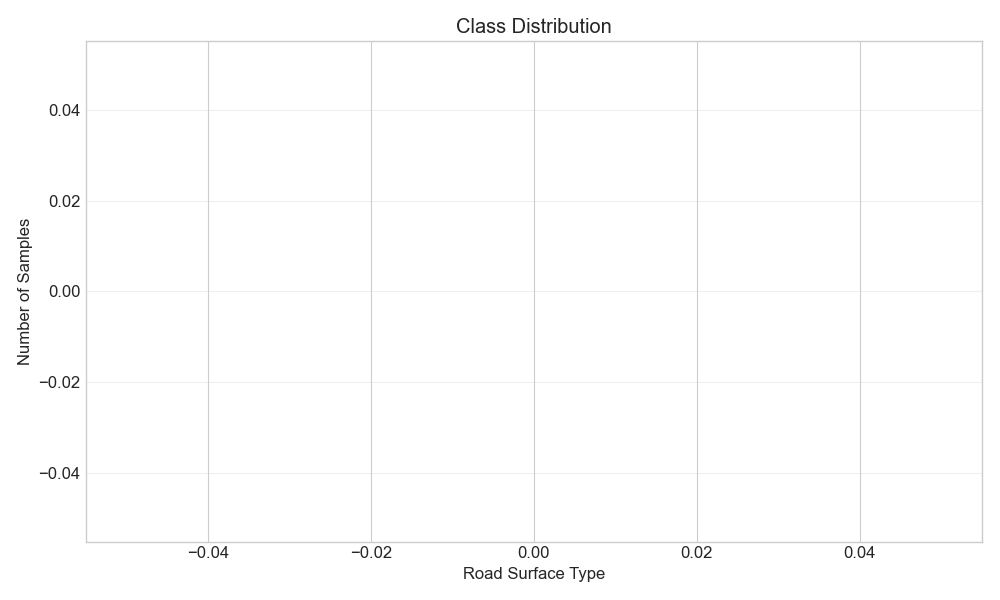
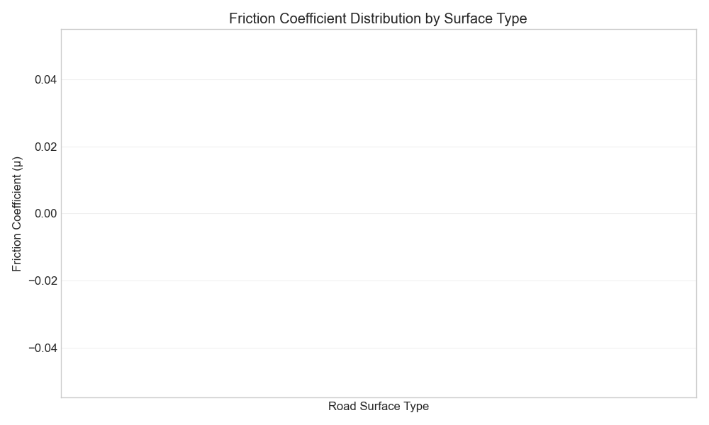
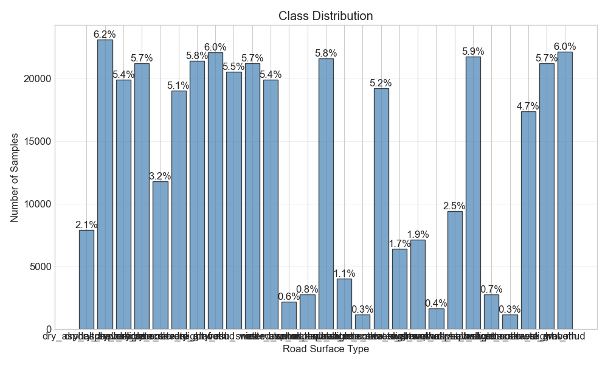
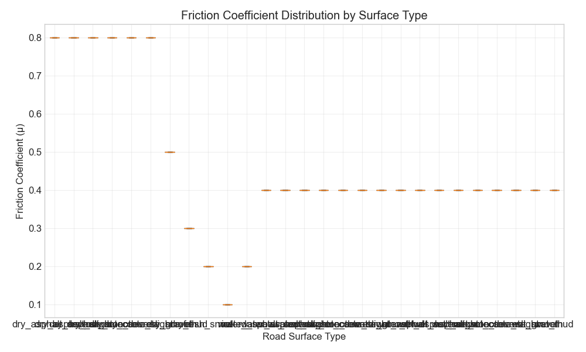
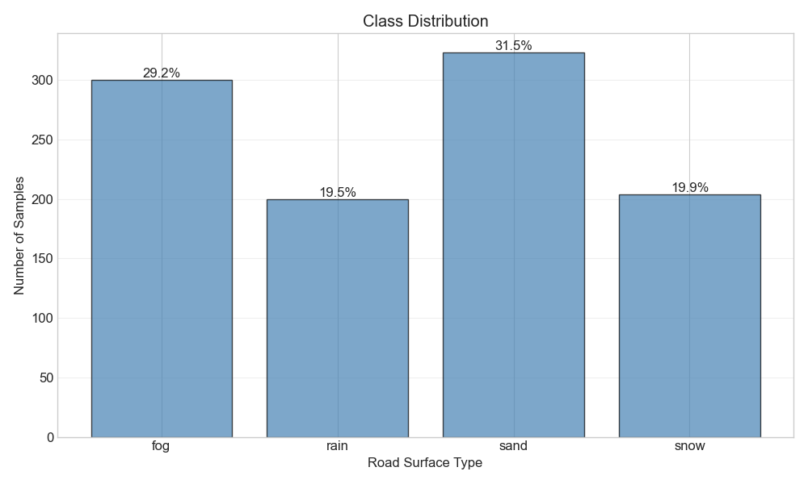
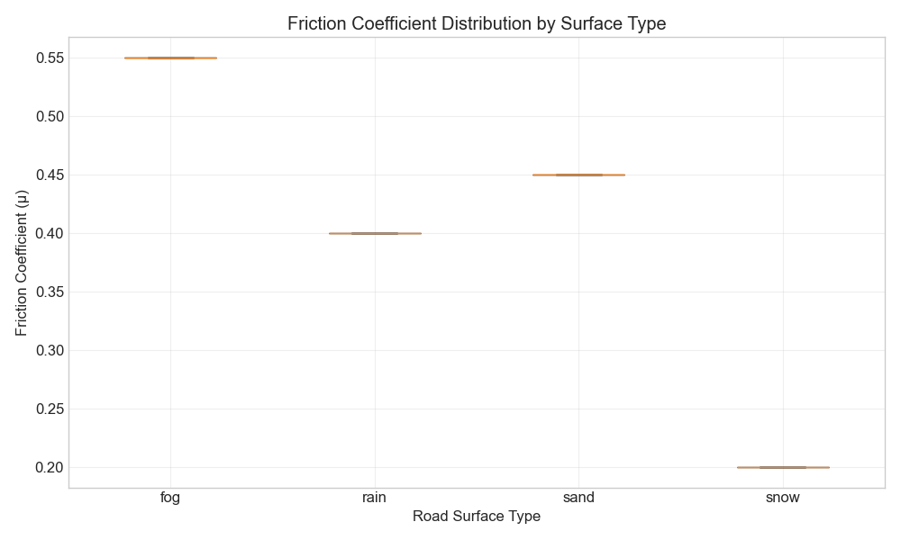

Generated on: 2026-07-11 08:49:14
Total Samples: 0
| Class | Count | Percentage |
|---|
| Class | Min | Max | Mean | Std |
|---|


Total CAN Messages: 0
Duration: 0.00 seconds
Sample Rate: 0.0 Hz
| Signal | Min | Max | Mean | Std | Missing |
|---|



Total Samples: 1027
| Weather | Count | Percentage |
|---|---|---|
| fog | 300 | 29.2% |
| rain | 200 | 19.5% |
| sand | 323 | 31.5% |
| snow | 204 | 19.9% |


Total Samples: 0
Total Images: 0
[OK] Datasets look good! No major issues detected.